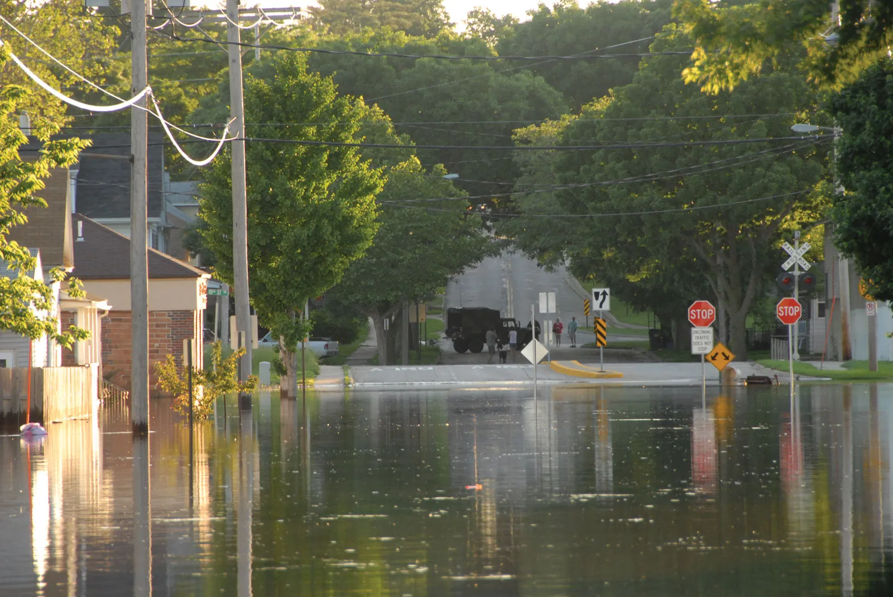

Flood Prevention
Explore Methods for Preventing Floods

Understanding Flood Prevention: Flood prevention involves strategies to manage and reduce flood risks, ensuring communities and infrastructure remain safe from water damage.
Key Flood Control Measures:
- Drainage Systems: Proper drainage infrastructure helps direct excess water away from urban and rural areas.
- Retention Ponds: These store excess rainwater and slowly release it to prevent flooding.
- Levees and Dams: Structures designed to control water flow and prevent overflow into populated areas.
- Green Infrastructure: Parks, wetlands, and permeable pavements that help absorb and manage rainwater naturally.
Early Warning Systems: Implementing real-time monitoring and alert systems can help communities prepare for and respond to potential floods.

Enhancing Community Resilience:
- Encouraging sustainable urban planning to minimize flood risks.
- Educating the public on flood preparedness and emergency response.
- Investing in flood-resistant infrastructure and building designs.
Conclusion: Effective flood prevention requires a combination of engineering solutions, environmental conservation, and proactive planning to protect communities from the devastating effects of flooding.